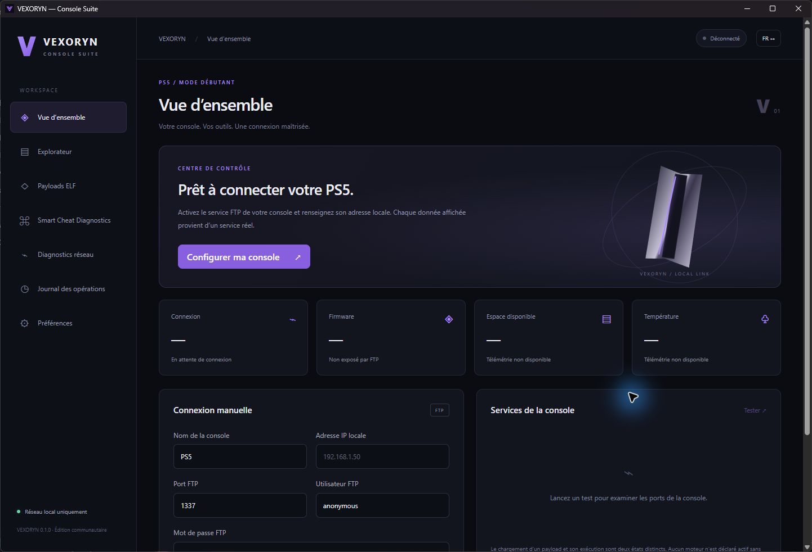

Explorateur FTP
Parcourez les dossiers et transférez vos fichiers entre Windows et un serveur FTP compatible. Les erreurs restent visibles.
Un espace clair pour vos fichiers, vos payloads et vos diagnostics. Une console suite indépendante, conçue pour les services homebrew PS5 sur votre réseau local.
Première version technique · validation sur PS5 réelle à effectuer
Les capacités dépendent des services exposés par votre console. Une donnée indisponible reste indisponible.
Parcourez les dossiers et transférez vos fichiers entre Windows et un serveur FTP compatible. Les erreurs restent visibles.
Testez les ports configurés sur une adresse locale. Un port ouvert indique un service accessible, pas une identité PS5 confirmée.
Envoyez un ELF local à un chargeur TCP compatible. La transmission ne prouve pas que le payload s'est exécuté.
Analysez les identifiants, versions et messages d'erreur fournis. Aucun cheat ou moteur compatible n'est inventé.

| Capacité | Condition | Validation |
|---|---|---|
| Fichiers & transferts | Serveur FTP activé et accessible | Tests logiciels ; PS5 à valider |
| Envoi ELF | Chargeur TCP compatible, fichier et firmware vérifiés | Transport ; exécution non confirmée |
| Firmware, température, espace | API console documentée nécessaire | Non disponible sans API |
| Installation PKG | Service d'installation et confirmation console | Adaptateur à développer |
| Application native PS5 | SDK communautaire, compilation et tests matériels | Phase d'étude |
VEXORYN ne fournit aucun exploit, jeu, clé propriétaire ou payload tiers. La compatibilité d'un payload doit être vérifiée auprès de son projet officiel.
Le dépôt GitHub doit être renseigné avant de proposer un téléchargement. Aucun installateur public n'est annoncé à ce stade.
Première version technique Windows : connexion locale, diagnostics, explorateur FTP, envoi ELF et analyse des erreurs cheats. Consultez les rapports de tests du dépôt avant diffusion. Aucun test sur PS5 réelle n'est confirmé.
Après publication, téléchargez l'installateur Windows depuis GitHub Releases. Comparez son SHA-256 avec SHA256SUMS.txt. Lancez l'installation.
Connectez le PC et la console au même réseau privé. Activez un serveur FTP compatible sur votre console déjà préparée et notez son adresse et son port.
Saisissez l'adresse IP locale dans VEXORYN, puis lancez le diagnostic. Un service absent nécessite une intervention sur la console.
Ouvrez l'explorateur et choisissez un dossier. Utilisez uniquement des fichiers personnels ou autorisés. Vérifiez le résultat du transfert avant toute modification supplémentaire.
Le support public sera accessible dans les Issues du dépôt une fois la publication configurée.
Oui. VEXORYN communique avec les services que vous avez activés. Il ne prépare ni ne jailbreak votre console.
FTP et un simple test TCP ne fournissent pas cette information de façon fiable. Une API documentée sera nécessaire.
Non. Le chargeur peut recevoir les octets sans que le payload fonctionne. Consultez les logs et vérifiez l'état du service sur la console.
Utilisez Paramètres Windows → Applications → VEXORYN → Désinstaller. Sauvegardez vos journaux et paramètres avant de supprimer les données locales.
Aucune télémétrie n'est prévue. La consultation des releases contacte GitHub. Les opérations console restent sur le réseau local.